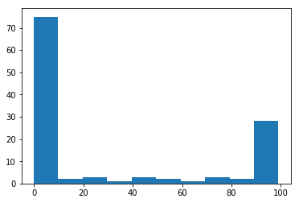

Arrays as images, images as arrays
You can consider arrays as images, and images as arrays.
We start off with our usual imports:
import numpy as np
import matplotlib.pyplot as plt
Let’s make an array of numbers between 0 through 99:
an_array = np.array([[ 0, 0, 0, 0, 0, 0, 0, 0],
[ 0, 0, 0, 9, 99, 99, 94, 0],
[ 0, 0, 0, 25, 99, 99, 79, 0],
[ 0, 0, 0, 0, 0, 0, 0, 0],
[ 0, 0, 0, 56, 99, 99, 49, 0],
[ 0, 0, 0, 73, 99, 99, 31, 0],
[ 0, 0, 0, 91, 99, 99, 13, 0],
[ 0, 0, 9, 99, 99, 94, 0, 0],
[ 0, 0, 27, 99, 99, 77, 0, 0],
[ 0, 0, 45, 99, 99, 59, 0, 0],
[ 0, 0, 63, 99, 99, 42, 0, 0],
[ 0, 0, 80, 99, 99, 24, 0, 0],
[ 0, 1, 96, 99, 99, 6, 0, 0],
[ 0, 16, 99, 99, 88, 0, 0, 0],
[ 0, 0, 0, 0, 0, 0, 0, 0]])
an_array.shape
(15, 8)
In fact this array represents a monochrome picture of a letter.
We can show arrays as images using the plt.imshow command from
matplotlib. Here is the default output:
plt.imshow(an_array)
<matplotlib.image.AxesImage at 0x1187a8e10>

The image is weirdly colorful. That is because matplotlib is using the default
colormap. A colormap is a mapping from values in the array to colors. In
matplotlib < 2.0 the default colormap is called jet and maps low numbers
in the image (0 in our case) to blue, and high numbers (99 in our case) to
red. For matplotlib version 2.0 and above the default colormap is called
viridis. viridis maps low numbers to purple and high numbers to
yellow.
We can see the relationship of the numbers to the colors by asking matplotlib to show the colormap:
# Nearest interpolation is now the default
plt.imshow(an_array)
plt.colorbar()
<matplotlib.colorbar.Colorbar at 0x1188d5f60>
In our case, our image would make more sense as grayscale, so we use the
gray colormap, like this:
plt.imshow(an_array, cmap='gray')
plt.colorbar()
<matplotlib.colorbar.Colorbar at 0x118907780>

A grayscale image is an array containing numbers giving the pixel intensity values - in our case between 0 and 99.
Here we set gray to the default colormap for the rest of our plots:
# Set 'gray' as the default colormap
plt.rcParams['image.cmap'] = 'gray'
We can also plot lines in matplotlib. For example, we might want to plot the values in row 8 from this array. Because Python indices start at 0, this is the 9th row of the array.
plt.plot(an_array[8])
[<matplotlib.lines.Line2D at 0x118a98f28>]
The x axis is the position in the array (0 through 7) and the y axis is the value of the array row at that position.
The plot shows us the 0 values at the edges of the bar of the “i”; the values ramp up to the peak at the middle of the bar of the “i”, in columns number 3 and 4.
A transpose in numpy uses the .T method on the array. This has the
effect of flipping the rows and columns (in 2D):
an_array.T
array([[ 0, 0, 0, 0, 0, 0, 0, 0, 0, 0, 0, 0, 0, 0, 0],
[ 0, 0, 0, 0, 0, 0, 0, 0, 0, 0, 0, 0, 1, 16, 0],
[ 0, 0, 0, 0, 0, 0, 0, 9, 27, 45, 63, 80, 96, 99, 0],
[ 0, 9, 25, 0, 56, 73, 91, 99, 99, 99, 99, 99, 99, 99, 0],
[ 0, 99, 99, 0, 99, 99, 99, 99, 99, 99, 99, 99, 99, 88, 0],
[ 0, 99, 99, 0, 99, 99, 99, 94, 77, 59, 42, 24, 6, 0, 0],
[ 0, 94, 79, 0, 49, 31, 13, 0, 0, 0, 0, 0, 0, 0, 0],
[ 0, 0, 0, 0, 0, 0, 0, 0, 0, 0, 0, 0, 0, 0, 0]])
# Defaults of nearest interpolation and gray colormap
plt.imshow(an_array.T)
<matplotlib.image.AxesImage at 0x118a084e0>
We can also reshape the original array to a 1D array, by stacking all the rows end to end:
old_shape = an_array.shape
a_1d_array = np.reshape(an_array, old_shape[0] * old_shape[1])
a_1d_array
array([ 0, 0, 0, 0, 0, 0, 0, 0, 0, 0, 0, 9, 99, 99, 94, 0, 0,
0, 0, 25, 99, 99, 79, 0, 0, 0, 0, 0, 0, 0, 0, 0, 0, 0,
0, 56, 99, 99, 49, 0, 0, 0, 0, 73, 99, 99, 31, 0, 0, 0, 0,
91, 99, 99, 13, 0, 0, 0, 9, 99, 99, 94, 0, 0, 0, 0, 27, 99,
99, 77, 0, 0, 0, 0, 45, 99, 99, 59, 0, 0, 0, 0, 63, 99, 99,
42, 0, 0, 0, 0, 80, 99, 99, 24, 0, 0, 0, 1, 96, 99, 99, 6,
0, 0, 0, 16, 99, 99, 88, 0, 0, 0, 0, 0, 0, 0, 0, 0, 0,
0])
a_1d_array.shape
(120,)
Reshaping the array to one dimension is a common operation, so there is a
separate numpy command for that, np.ravel:
np.ravel(an_array)
array([ 0, 0, 0, 0, 0, 0, 0, 0, 0, 0, 0, 9, 99, 99, 94, 0, 0,
0, 0, 25, 99, 99, 79, 0, 0, 0, 0, 0, 0, 0, 0, 0, 0, 0,
0, 56, 99, 99, 49, 0, 0, 0, 0, 73, 99, 99, 31, 0, 0, 0, 0,
91, 99, 99, 13, 0, 0, 0, 9, 99, 99, 94, 0, 0, 0, 0, 27, 99,
99, 77, 0, 0, 0, 0, 45, 99, 99, 59, 0, 0, 0, 0, 63, 99, 99,
42, 0, 0, 0, 0, 80, 99, 99, 24, 0, 0, 0, 1, 96, 99, 99, 6,
0, 0, 0, 16, 99, 99, 88, 0, 0, 0, 0, 0, 0, 0, 0, 0, 0,
0])
One use of the 1D version of the array, is for making a histogram of the distribution of values in the array:
plt.hist(a_1d_array)
(array([75., 2., 3., 1., 3., 2., 1., 3., 2., 28.]),
array([ 0. , 9.9, 19.8, 29.7, 39.6, 49.5, 59.4, 69.3, 79.2, 89.1, 99. ]),
<a list of 10 Patch objects>)

By default, the plt.hist function uses 50 bins, but you can specify how
many bins you want with the bins keyword:
plt.hist(a_1d_array, bins=75)
(array([72., 0., 0., 0., 1., 0., 2., 0., 0., 1., 0., 0., 1.,
0., 0., 0., 0., 0., 2., 0., 1., 0., 0., 1., 0., 0.,
0., 0., 0., 0., 0., 1., 0., 0., 1., 0., 0., 1., 0.,
0., 0., 0., 1., 0., 1., 0., 0., 1., 0., 0., 0., 0.,
0., 0., 0., 1., 0., 0., 1., 1., 1., 0., 0., 0., 0.,
0., 1., 0., 1., 0., 0., 2., 1., 0., 24.]),
array([ 0. , 1.32, 2.64, 3.96, 5.28, 6.6 , 7.92, 9.24, 10.56,
11.88, 13.2 , 14.52, 15.84, 17.16, 18.48, 19.8 , 21.12, 22.44,
23.76, 25.08, 26.4 , 27.72, 29.04, 30.36, 31.68, 33. , 34.32,
35.64, 36.96, 38.28, 39.6 , 40.92, 42.24, 43.56, 44.88, 46.2 ,
47.52, 48.84, 50.16, 51.48, 52.8 , 54.12, 55.44, 56.76, 58.08,
59.4 , 60.72, 62.04, 63.36, 64.68, 66. , 67.32, 68.64, 69.96,
71.28, 72.6 , 73.92, 75.24, 76.56, 77.88, 79.2 , 80.52, 81.84,
83.16, 84.48, 85.8 , 87.12, 88.44, 89.76, 91.08, 92.4 , 93.72,
95.04, 96.36, 97.68, 99. ]),
<a list of 75 Patch objects>)

As you can imagine, it’s not hard to go back to the 2D shape, by splitting the 1D array back into 15 rows of 8 values each (and therefore 8 columns):
array_back = np.reshape(a_1d_array, (15, 8))
array_back
plt.imshow(array_back)
<matplotlib.image.AxesImage at 0x11902f080>

In numpy, basic operations like multiplication, addition, comparison, are always elementwise. For example, this multiplies every array value by 10:
an_array * 10
array([[ 0, 0, 0, 0, 0, 0, 0, 0],
[ 0, 0, 0, 90, 990, 990, 940, 0],
[ 0, 0, 0, 250, 990, 990, 790, 0],
[ 0, 0, 0, 0, 0, 0, 0, 0],
[ 0, 0, 0, 560, 990, 990, 490, 0],
[ 0, 0, 0, 730, 990, 990, 310, 0],
[ 0, 0, 0, 910, 990, 990, 130, 0],
[ 0, 0, 90, 990, 990, 940, 0, 0],
[ 0, 0, 270, 990, 990, 770, 0, 0],
[ 0, 0, 450, 990, 990, 590, 0, 0],
[ 0, 0, 630, 990, 990, 420, 0, 0],
[ 0, 0, 800, 990, 990, 240, 0, 0],
[ 0, 10, 960, 990, 990, 60, 0, 0],
[ 0, 160, 990, 990, 880, 0, 0, 0],
[ 0, 0, 0, 0, 0, 0, 0, 0]])
Comparison is also elementwise. For example, this gives True for every value > 50, and False for every value <= 50:
an_array > 50
array([[False, False, False, False, False, False, False, False],
[False, False, False, False, True, True, True, False],
[False, False, False, False, True, True, True, False],
[False, False, False, False, False, False, False, False],
[False, False, False, True, True, True, False, False],
[False, False, False, True, True, True, False, False],
[False, False, False, True, True, True, False, False],
[False, False, False, True, True, True, False, False],
[False, False, False, True, True, True, False, False],
[False, False, False, True, True, True, False, False],
[False, False, True, True, True, False, False, False],
[False, False, True, True, True, False, False, False],
[False, False, True, True, True, False, False, False],
[False, False, True, True, True, False, False, False],
[False, False, False, False, False, False, False, False]])
Matplotlib will treat False as 0 and True as 1, so this is one way of binarizing the image at a threshold (of 50 in this case):
plt.imshow(an_array > 50)
<matplotlib.image.AxesImage at 0x118f880f0>
We can slice arrays as we slice strings or lists. The difference for arrays is that we can slice in any or all dimensions at the same time. For example, to get the dot of the “i” it looks (from the numbers at the sides of the ploat) that we want to the top 4 rows, and the last 5 columns:
an_array[0:4, 3:]
plt.imshow(an_array[0:4, 3:])
<matplotlib.image.AxesImage at 0x119177550>